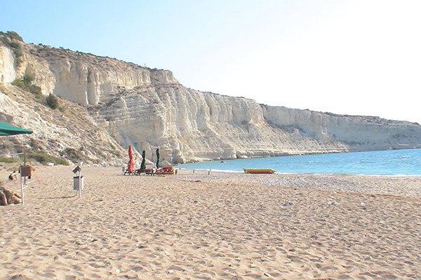
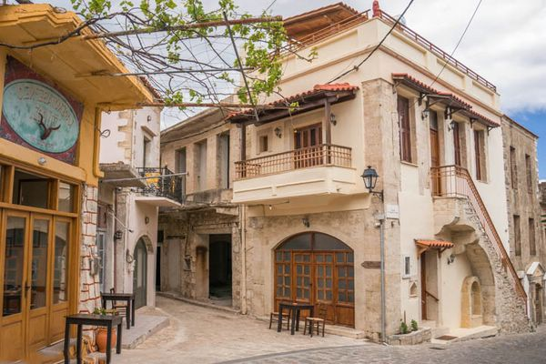
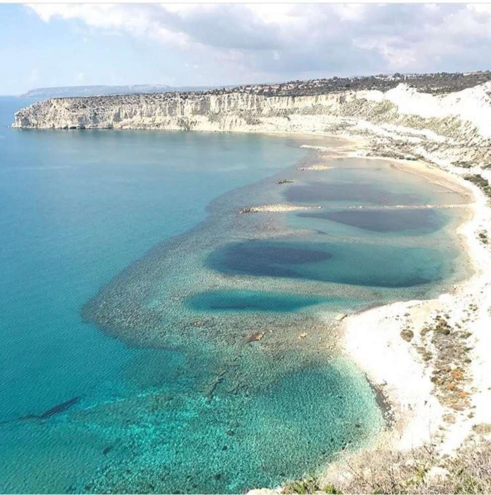

Столиця - Епіскопі



- Епіскопі — адміністративний центр Акротирі і Декелія, територій, що знаходяться на Кіпрі, на яких розташовуються британські військові бази. Розташований на березі однойменної затоки.
- Епіскопі заснований в 1953 у в західної частини Акротирі, ще до оголошення незалежності Кіпру. Саме в Епіскопі найчастіше проходять демонстрації греків-кіпріотів, які протестують проти розташування на острові військових баз.
- На Кіпрі є ще два села з назвою Епіскопі — в районі Лімасол і в районі Пафос.